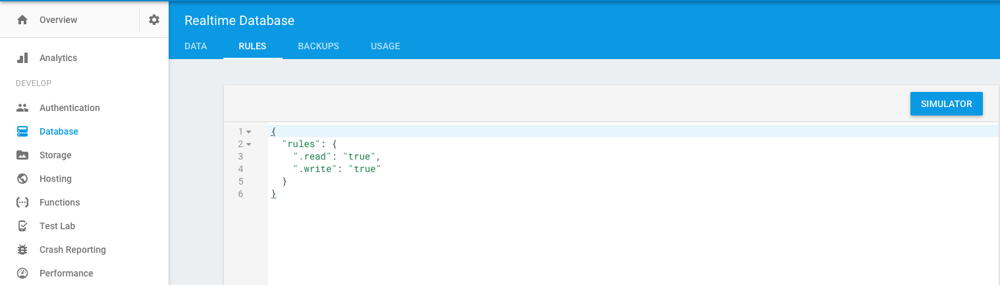
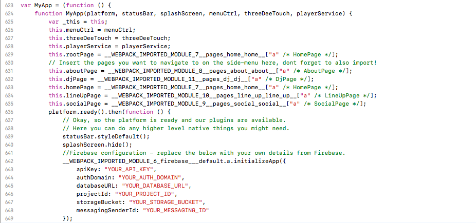
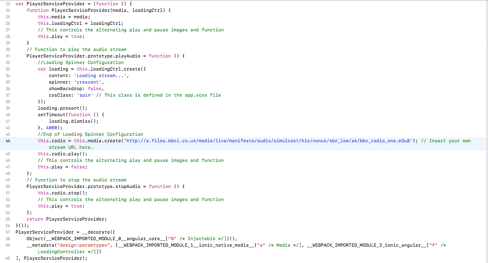
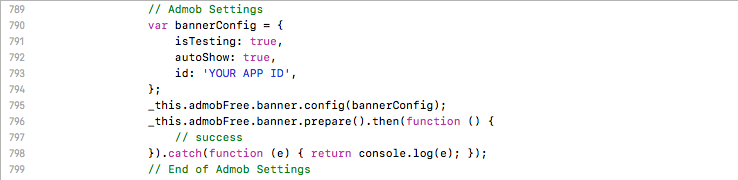
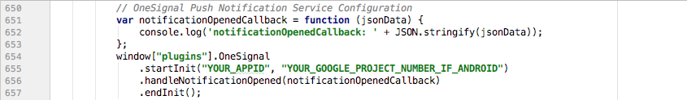
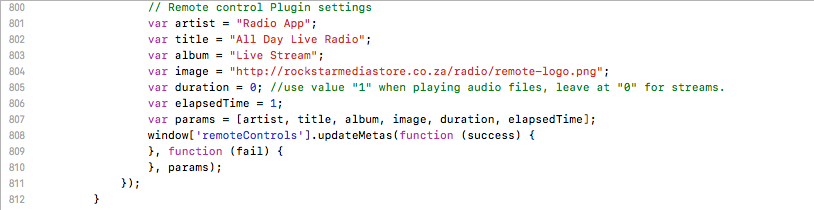
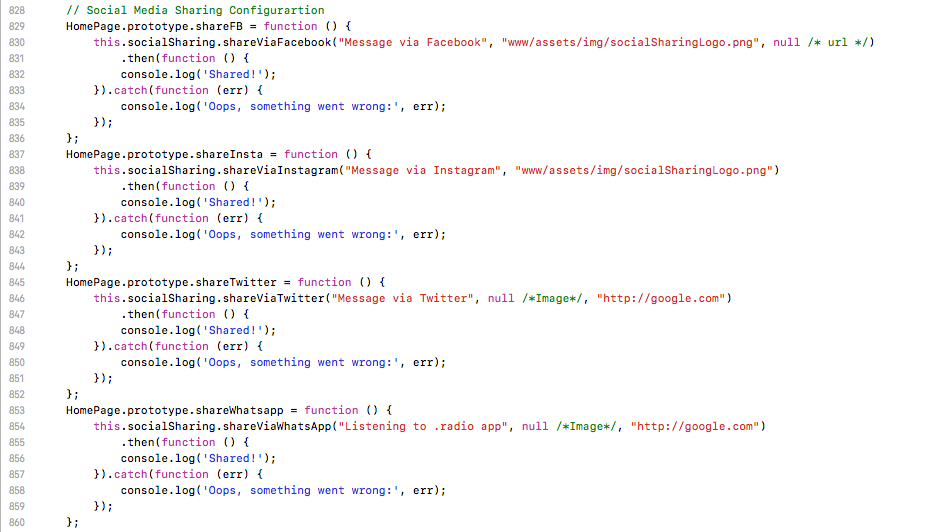
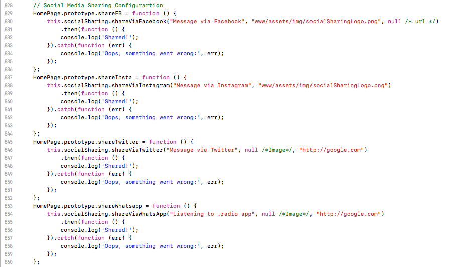

You will need to run this project template inside of Android Studio, so if you do not have Android Studio installed on your computer, navigate to Android Studio's official website on your computer, and download a fresh copy, the software is free.
In addition, if you would like to publish your app on the Google PlayStore, you will need to also make sure that you have a valid developer account with Google.
If you find yourself struggling with any of the above, please do not hesitate to give me a shout, and I’ll be more than willing to assist you.
Firebase Setup
You will need to use your own Firebase account to link your own app. Heard over to: http://firebase.google.com and create an account (if you don’t already have one) and login!
After logging in, navigate to your Console and select the project you'll be linking the app to / create a new project if you do not already have one.
Thereafter, under your Firebase project, first, you will need to create a Firebase user under 'Authentication' - Choose and enable 'Email/Password' for the 'Sign-in-Method'. Create a new user, this username will be the one you'll need to log-into your admin panel at the end.
When you're done creating a new user, heard over to 'Database' and under 'Rules', set read and write to be 'true' like this:

This will enable your app to be able to read the data without users having to be authenticated.
Next, still under Database (just click on Database again), on the far right, look for 3 dots (next to the plus and minus icons), click on the 3 dots and select 'Import JSON'. Navigate to your downloaded files and select the ‘radio.json' file, then import the JSON file.
Afterwards, look towards the top left section on the Firebase website, you will see a button called 'Overview', click on it. You will be navigated to another page, on this page, click on 'Add Firebase to your web app', this will bring out a pop-up with a whole bunch of keys. Copy this information somewhere and heard over to your Xcode project.
Inside your Android Studio project, navigate to the 'assets' folder, then inside this folder navigate to the 'www' folder, under this folder navigate to the 'build' folder, then under the build folder navigate to the 'main.js' file:

In this file, look between the lines 643 - 648, replace the vaulues in these lines by inserting your own values from Firebase inside the relevant "inverted" commas. This will now link your app to your Firebase project.
Audio Stream Setup
To insert your own audio stream URL, heard over to the ‘main.js’ file as previously mentioned. Navigate to line 44 and replace the current stream URL with your own stream URL (as shown in the graphic below). That’s it. Your stream will now be able to be played in the app.

AdMob Configuration
Inside your ‘main.js’ file, remove the line number 791 'isTesting: true' when you are ready to roll out your application in production. You will also need to include your AdMob App ID inside line 793.

Push Notifications
The app uses the OneSignal service to send push notifications. Heard over to https://onesignal.com to create your account and setup your project, once done, come back to Xcode, and with the 'main.js' file as described in the previous section, sroll down to line 655 and insert your OneSignal App ID inside the "inverted commas".

Remote Control Settings
Inside your ‘main.js’ file, between lines 801 - 804, set the information that you would like to show in the remote control that appears in the Notification Center. Play around with those variables and you will see how it will look like in your own app.

Social Sharing Configuration
Configure this section in your ‘main.js. file to setup your social media sharing options. These are the social media options you see on the home page of the app. For more details on the social media plugin options, please visit the: Social Sharing plugin official docs.

Admin Panel Setup
This video demonstrates how to go about setting up your admin panel.
Support
Once again, thank you for purchasing this template! If you encounter any problems setting this project up or need additional assistance in editing or customizing this template, please drop me a line via my official email support at: studio@rockstarmediastore.co.za
Social Sharing Configuration
Configure this section in your ‘main.js. file to setup your social media sharing options. These are the social media options you see on the home page of the app. For more details on the social media plugin options, please visit the: Social Sharing plugin official docs.
